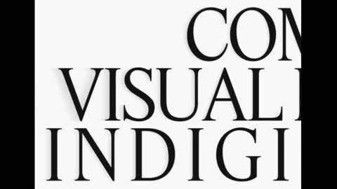
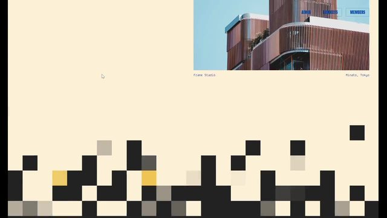
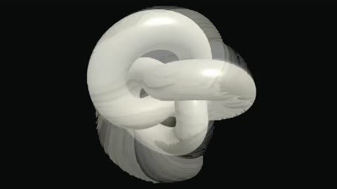

点封面在页面里播放（Vimeo / YouTube / X 需要代理；Vimeo 若没自动开始，再点一下播放键）。觉得好就点「喜欢」，我会据此多找同类，但每天仍保持类型分散。
目录 01 WAR — Main Title Sequence02 Microsoft | Foundry Labs03 The new iPad mini04 水面物理图标（Apple Health 概念）05 Maria Vasilyeva 作品集06 极简建筑事务所网站（Astro + GSAP）07 Breaking the Frame：Three.js 实时 Datamosh08 Creativity Explained - What is layout?09 Why does this animal never age?10 Catch Me If You Can 片头－ 看完剔除（16 条）拆 细拆：WAR 片头
01 片头片尾
WAR — Main Title Sequence
Imaginary Forces · Vimeo 10-05 上传（超过 7 天） 【看过视频】
45 秒全片带声音完整看过
好在哪 黑白画布上只有厚涂的黑白颜料笔触，能看到刷毛压出的棱和布纹，到 0:20 音乐炸开时才第一次刷进大片深红。镜头不动，全靠颜料和剪辑：每一刀都硬切在弦乐的重音上。演职员名是很小、字距拉得很开的细无衬线字，最后收在正中的「WAR」。字体未识别可借 片头只用黑、白加一个留到高潮才出现的强调色；笔触按 2–3 帧一跳出现、不做缓动，剪辑点卡在音乐重音上，字幕小字、大字距、静止不动
展开全文
02 字体版式 代码动画
Microsoft | Foundry Labs
Ranger & Fox · 作者是 AI 业务品牌片，这里只看字和版式 · Vimeo 06-01 上传，Stash 10-21 收录（超过 7 天） 【看过画面（抽帧）】
好在哪 全黑底，等宽大写字带下划线和光标，像终端里一行行打出来（A_BREAKTHROUGH_、NOW_IT_TAKES_A_WEEKEND.）；画面切成网格小窗，放风暴、水滴、分子素材，最后落 logo。没有旁白。字体未识别（等宽）可借 讲 AI 概念的标题卡用等宽字加闪烁光标逐字打出，配一两格网格素材，比大标题动画更克制
展开全文
03 3D质感
The new iPad mini
Apple · YouTube 10-26 【看过画面（抽帧）】
好在哪 纯白底，机身侧立旋转只露一条细边，芯片渲染、Siri 胶囊、一行黑字里只把一个词染蓝；结尾是光面立体的「mini」字压在 9:41 锁屏上可借 讲硬件时用 Three.js 让机身侧面转一圈只露厚度，文字一句话只标一个蓝色关键词
展开全文
04 UI动效 3D质感
水面物理图标（Apple Health 概念）
@rajavijayaraman（60fps 收录） · X 10-26 【看过画面（抽帧）】
原帖 15 秒，无声
好在哪 深色手机界面下半截是一汪暗水，白色圆角图标里一颗红心半浮半沉，带细小气泡上下晃，其他元素都不动可借 竖屏讲「数据存在本地/沉在底下」这类概念时，让一个图标在水面浮沉，只动这一个元素
展开全文
05 字体版式 转场
Maria Vasilyeva 作品集
Maria Vasilyeva（Codrops 10-20 收录） · 10-20 【看过画面（抽帧）】

Codrops ↗ Codrops 文章里的演示录屏，拼起来看的，无声
好在哪 纯黑白，超大衬线大写字（COMPOSING VISUAL NARRATIVES）铺满屏，字母会被横向拉长再收回；菜单是 NOTES / MELODY / OVERTURE / JAZZ，翻页用高低不齐的黑色竖条盖过去。字体未识别（衬线）可借 标题字横向拉丝再归位当入场动画；章节切换用一排长短不一的黑条从下往上盖满
展开全文
06 转场 代码动画
极简建筑事务所网站（Astro + GSAP）
Codrops 教程 · 10-09（超过 7 天） 【看过画面（抽帧）】

Codrops ↗ Codrops 文章里的演示录屏，拼起来看的，无声
好在哪 奶油色底，页面切换时一片黑、灰、少量黄色的方块像素从下往上铺满再散开，建筑照片也按像素块露出来；标题是蓝色窄体大字 SELECTED WORKS。附源码。字体未识别可借 两段内容之间用像素方块铺满再散开当转场，颜色只用黑、灰加一个强调色
展开全文
07 转场 代码动画 3D质感
Breaking the Frame：Three.js 实时 Datamosh
Codrops 教程 · 09-02（超过 30 天） 【看过画面（抽帧）】

Codrops ↗ Codrops 文章里的演示录屏，拼起来看的，无声
好在哪 黑底上一个奶白色光面三叶结在转，动起来时表面被拖出像素拖影、像视频压缩坏帧，停下又恢复干净；中间有调试用的运动矢量和网格画面。附源码可借 两个镜头之间用一次 datamosh 拖影当转场，只用一下，主体保持单色光面
展开全文
08 知识讲解 MG 字体版式
Creativity Explained - What is layout?
Oddfellows · 2021 年作品（经典，Vimeo 2021-09-03 上传） 【看过画面（抽帧）】
只下载、只看了前 2 分钟
好在哪 讲「版式是什么」本身就是一页页杂志版式：网格线、粗体无衬线标题、黑白照片加一块蓝或红色块，红椅子在网格里移位、再出现在广告牌上。字体未识别可借 讲概念时把画面直接做成杂志页，先显出网格线再让元素落位，每页一个强调色
展开全文
09 知识讲解 MG
Why does this animal never age?
TED-Ed（Raymond Adkins） · YouTube 10-20 【看过画面（抽帧）】
只下载、只看了前 2 分钟
好在哪 灰绿低饱和底、带纸纹，水螅是一根细细的亮绿线条，标注只用一根细箭头；开头先给一句引文白卡，再进罐子特写和人物，信息一次一个可借 科普开场先放一张白底引文卡，主角用一种亮色，背景压到低饱和带纸纹
展开全文
10 片头片尾 MG
Catch Me If You Can 片头
Kuntzel + Deygas（YouTube 是网友转载） · 2002 年作品（经典） 【看过画面（抽帧）】
只下载、只看了前 2 分钟
好在哪 剪影小人在大色块里走，每段一个底色（天蓝、橙黄、黑红、粉），竖线、跑道线、书架格子把画面切开，演职员名直接嵌在场景里可借 片尾字幕不叠在画面上，而是放进场景里当招牌、书脊；每段换一个底色，人物全用剪影
展开全文
看完剔除（16 条） DixonBaxi · 8 秒荧光箭头绕 logo，和上一条同一套，更吵
Codrops · 主题是用 AI agent 做动画，几套复古主题风格混杂
Real Engineering · CG 飞机渲染偏常规，热力图配色刺眼
今日细拆 · 第 1 条
一块画布、三种颜色、全部硬切 【看过视频】 45 秒全片带声音完整看过。这支片头镜头几乎不动，也没有任何转场特效，只靠厚涂颜料、2–3 帧一跳的笔触和卡在弦乐重音上的硬切撑起来。下面的秒数都是看片记下的，可以直接抄进 Remotion 的 Sequence 表（30fps 下帧数＝秒×30）
好在哪 材质是真的「厚」：不是纸上的水墨，而是布纹画布上的厚涂颜料（像油画或丙烯），刷毛压出的棱清清楚楚，光一照就有立体感。看不出是实拍定格还是 CG，合成痕迹应该不少 克制：整片只有黑、白、深红三种颜色，红色憋到 0:20 才出现，一出来就是满屏斜刷，情绪一下子顶上去 镜头锁死，只有极轻微的漂移，所有能量都来自颜料和剪辑 剪辑跟着音乐走：快速弦乐反复型里的每个打击重音都是一刀，45 秒大约 25 个镜头，多数 1–3 秒一个 节奏表 0:00–0:01 黑底上，一道白色笔触沿左边缘刷下 0:01–0:04 白底中央一团黑颜料堆起来，斜向的窗光阴影在画面上慢慢移动 0:06 第一组演职员名出现 0:10 分屏：左边黑颜料，右边露出的生画布 0:19–0:20 光面黑颜料的微距特写 0:20 音乐大爆发，红色第一次进场：满屏斜向红色笔触 0:33–0:37 红和黑互相叠刷、混在一起 0:42–0:45 最后一个重音落下，黑底，「WAR」在正中慢慢淡入（同一种字体，放大，静止），音乐余音后戛然而止 规律：前 20 秒只有黑白，在黑底和白底之间来回切；0:20 红色登场是全片唯一的「换挡」；结尾回到黑底，只留标题
配色（取色近似值） #0D0D0D 黑颜料 / 黑画布（近似）#F2F0EB 白画布（近似）#9B1B1E 深红（近似）
只有这三色，没有渐变色、没有第四种颜色。白底镜头字用黑，黑底镜头字用白
笔触和光 笔触不是「刷子划过去慢慢露出来」，而是几帧一块、一块一块跳出来，像定格动画，速度恒定，没有缓入缓出 背景在白画布和黑画布之间交替 白底镜头上有一道柔和的斜向窗光阴影，匀速慢慢漂移，完全不理会音乐节奏，和快剪形成对比 字幕 很小的细无衬线字，字距拉得很开，完全静止，不做任何文字动画 约 0.5 秒淡入，停住，然后在切镜前淡出，或者直接跟着镜头一起切掉 放在画面空的地方：左上角成块排列，或者靠两侧 字体：未识别 在 Remotion 里怎么做 先放音乐：把配乐拖进时间线，手标每个打击重音的帧号，做一张剪辑表 cuts=[{from,dur,bg,layer}]，每条一个 <Sequence>。镜头和镜头之间不加任何过渡，就是硬切 笔触：两种做法任选。一是把颜料笔触拍照或渲染成序列帧（sprite），用 <Img> 按帧号换图；二是一张厚涂颜料贴图加一个遮罩，遮罩一段一段变大。关键是每 2–3 帧才跳一次：const step=Math.floor(frame/3)，用 step 算进度，不用 interpolate 的缓动，速度保持恒定 画布质感：底层铺一张布纹画布贴图（白、黑各一张），笔触层加一点法线或浮雕感的高光，让刷毛棱在光下有立体感 窗光阴影：白底镜头上叠一层斜向的柔边渐变（linear-gradient 加大模糊），translateX 随帧线性移动，用 Easing.linear，不跟节拍 字幕：小号细无衬线，letterSpacing 设到 0.3–0.5em，位置固定。只用 interpolate(frame,[0,15],[0,1]) 做 0.5 秒（30fps 下 15 帧）的透明度淡入，切镜前同样 15 帧淡出，或者直接随镜头切掉。白底用黑字、黑底用白字 红色留到高潮：剪辑表里前 20 秒只允许黑白，0:20 那一刀才第一次用红色笔触层，满屏斜刷 结尾：最后一个重音切到纯黑底，「WAR」放在正中，同一字体放大，慢慢淡入后静止，音乐一断就结束 注意事项 颜色别加：一旦多出第四种颜色或渐变，这种克制感就没了 笔触别加缓动：一加 ease 就变成普通的「刷子划出」效果，失去定格的手作感 剪辑点一定要对准重音，差两三帧就会显得拖；先标好音乐再剪 窗光阴影要慢、要匀速，它是全片唯一「不跟节奏」的东西，正是靠它让画面有呼吸 字幕要小、要静，别做弹跳或打字机效果 画布和颜料贴图最好自己拍或自己做，别直接截原片素材 用在「鱼知道」 做一个 6–8 秒的黑白片头：前几刀只用黑白笔触卡鼓点，最后一刀刷进一笔品牌强调色，落在正中的小字标题上。不用任何转场特效，也能很有质感
看原片 ↗
信源：Vimeo、Stash、60fps.design、Codrops、YouTube。全程只读浏览，没有点赞、关注、评论或转发。